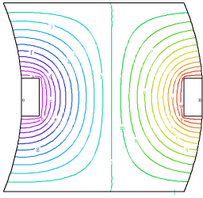

|
antiperiodic |

  
|
|
antiperiodic |
|
{ ANTIPERIODIC.PDE
This example shows the use of FlexPDE in applications with antiperiodic
boundaries.
The ANTIPERIODIC statement appears in the position of a boundary condition, but
the syntax is slightly different, and the requirements and implications are
more extensive.
The syntax is:
ANTIPERIODIC(X_mapping,Y_mapping)
The mapping expressions specify the arithmetic required to convert a point
(X,Y) in the immediate boundary to a point (X',Y') on a remote boundary.
The mapping expressions must result in each point on the immediate boundary
mapping to a point on the remote boundary. Segment endpoints must map to
segment endpoints. The transformation must be invertible; do not specify
constants as mapped coordinates, as this will create a singular transformation.
The antiperiodic boundary statement terminates any boundary conditions in effect,
and instead imposes equality of all variables on the two boundaries. It is
still possible to state a boundary condition on the remote boundary,
but in most cases this would be inappropriate.
The antiperiodic statement affects only the next following LINE or ARC path.
These paths may contain more than one segment, but the next appearing
LINE or ARC statement terminates the periodic condition unless the periodic
statement is repeated.
}
title 'ANTI-PERIODIC BOUNDARY TEST'
Variables u
definitions k = 0.1 h=0
equations u : div(K*grad(u)) + h = 0
boundaries Region 1 start(-1,-1) value(u)=0 line to (1,-1)
|
 |
{ The following arc is required to be an antiperiodic image of an arc
two units to its left. (This image boundary has not yet been defined.) }
antiperiodic(x-2,y) arc(center=-1,0) to (1.2,-0.2)
antiperiodic(x-2,y) line to (1.2,0.2)
antiperiodic(x-2,y) arc(center=-1,0) to (1,1)
value(u)=0 line to (-1,1)
{ The following arc provides the required image boundary for the previous
antiperiodic statement }
nobc(u) { turn off the value BC }
arc(center= -3,0) to (-0.8,0.2) line to (-0.8,-0.2) arc(center=-3,0) to close
{ an off-center heat source provides the asymmetric conditions to
demonstrate the antiperiodicity of the solution }
region 2 h=10 k=10
start(1.2,-0.2) line to (1.2,0.2) to (1,0.2) to (1,-0.2) to close
region 3 h=-10 k=10
start(-0.6,-0.2) line to (-0.6,0.2) to (-0.8,0.2) to (-0.8,-0.2) to close
monitors
grid(x,y)
contour(u)
plots
grid(x,y)
contour(u)
end